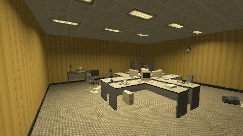

Tutorials › Furnish a Liminal Office
How to Furnish a Liminal Office in Godot 4
Place props, swap their states in place, and push them around.

Place ready prop scenes with what stands on a desk at desk height, build a desk corner that turns with its desk, swap a prop for another of its states in place, and let a CharacterBody3D push rigid props.
Script: furnish_office.gd (MIT) · Godot 4.3 or newer · its folder on GitHub
How to use it
place(name, position, turn)puts a prop scene in the level;desk_corner(position, turn)a desk with its monitor, keyboard and chair.swap_state(node, other_state)swaps a prop for another of its states at the same place.- Call
push_bodies(body, speed, delta)aftermove_and_slide(): a CharacterBody3D does not push rigid bodies by itself.
What it needs
- Prop scenes whose states share their origin.
Try it free
The Liminal PSX Office Props - Free Sampler has 8 props in 17 variants: a desk, a swivel chair, a CRT, a keyboard, a phone, a filing cabinet, a water cooler and a waste bin.
How it was tested
Checked with godot --headless --check-only in Godot 4.3 and 4.7.2.
The code
extends Node3D
## How to Furnish a Liminal Office in Godot 4
## Cordatix Godot 4 PSX tutorials, MIT licensed: https://github.com/GoldenSparrow-Dev/cordatix-godot-psx-tutorials
## The devlog: https://cordatix.itch.io/liminal-psx-office-props/devlog/1717204/how-to-furnish-a-liminal-office-in-godot-4-liminal-psx-office-props
const PROPS := "res://cordatix/liminal_psx_office_props/props/"
const DESK_TOP := 0.74 # metres: what stands on a desk sits at this height
## Place a prop scene: floor props stand on their origin, desk items on DESK_TOP.
func place(prop_name: String, at: Vector3, turn_deg := 0.0) -> Node3D:
var node: Node3D = load(PROPS + prop_name + ".tscn").instantiate()
node.position = at
node.rotation_degrees.y = turn_deg
add_child(node)
return node
## A desk with its monitor, keyboard and chair, all relative to the desk.
func desk_corner(at: Vector3, turn_deg: float) -> Node3D:
var desk := place("desk_office", at, turn_deg)
var basis := Basis(Vector3.UP, deg_to_rad(turn_deg))
place("crt_monitor__on", at + basis * Vector3(0.25, DESK_TOP, -0.12), turn_deg)
place("keyboard", at + basis * Vector3(0.2, DESK_TOP, 0.2), turn_deg)
place("chair_office__rigid", at + basis * Vector3(0.1, 0.0, 0.75), turn_deg + 180.0)
return desk
## Swap a prop for another of its states in place: every state shares the origin.
func swap_state(node: Node3D, prop_state: String) -> Node3D:
var next: Node3D = load(PROPS + prop_state + ".tscn").instantiate()
next.transform = node.transform
node.add_sibling(next)
node.queue_free()
return next
## A CharacterBody3D does not push rigid bodies by itself: call this after move_and_slide()
## with the speed the player walks at. The push grows with the prop's mass and stops once the
## prop keeps pace, so a 12 kg chair slides along and a 1 kg bin is not launched. It acts
## through the centre of mass: a push at the contact point tips chairs over.
func push_bodies(body: CharacterBody3D, speed: float, delta: float, share := 0.5) -> void:
for i in body.get_slide_collision_count():
var c := body.get_slide_collision(i)
var rb := c.get_collider() as RigidBody3D
if rb == null or rb.freeze:
continue
var n := -c.get_normal()
n.y = 0.0
if n.length() < 0.1:
continue
n = n.normalized()
var gap := speed - rb.linear_velocity.dot(n)
if gap > 0.0:
rb.apply_central_impulse(n * rb.mass * minf(gap, 1.0) * share * delta * 60.0)
The devlog and the pack
The step-by-step walkthrough is the devlog How to Furnish a Liminal Office in Godot 4 (Liminal PSX Office Props) on itch.io, written for Liminal PSX Office Props, a PS1-style asset pack by Cordatix for Godot 4, Unity, Unreal and Blender.